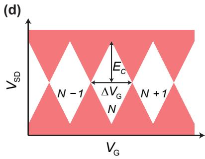

物理图像：把电子关进一个小岛
半导体量子点（semiconductor quantum dot，QD）的本质是一个由静电势在三个空间方向上同时限域载流子的”小岛”。 把它定义得最直接：“量子点（Quantum Dot, QD）是把导电的载流子（电子、空穴、激子）在三个空间维度进行束缚的半导体纳米结构，内部的电子能级和其他基本性能都与原子相近，所以又称为’人造原子’（artificial atom）”； 用一句等价的话给出同一图像：“在半导体中，当电子或者空穴在三个维度上都被限制在一个势阱中，只能通过隧穿耦合到源极（source, S）或者漏极（drain, D）的电荷库中，这样的系统我们称之为量子点”。两句话勾勒出三个判据：
- 三维限域：相对于体材料的连续能带和二维载流子气的一个自由方向，量子点在 、、 三个方向都把载流子限制在费米波长量级（典型 30–200 nm）的势阱内，运动自由度从二维降到零维，能谱从子带连续谱变为分立轨道；
- 隧穿式耦合：岛与源极、漏极之间是隧穿势垒，电子以隧穿方式逐个进出，而不是欧姆接触式的连续流动；
- 栅极可调：一个或多个栅极（plunger、barrier）通过静电势控制点内的能级结构和岛–源、岛–漏的耦合势垒高度，使岛的占据数 可以从几十个连续排空到一两个，甚至零。
在”栅控半导体量子点”一节补充了等效电路图：把隧穿势垒等效为电阻 与电容 的并联，量子点本身则看作一个总电容 的导体”小岛”，栅极经 静电感应岛的电化学势。这张图把”人造原子”翻译成”可调单电子晶体管”，也是后面所有输运、库仑阻塞、菱形相图、读出方案的电路母版。
横向与纵向
根据输运方向，量子点可大致分为两类。文献给出对应关系：
- 横向量子点：在已形成二维电子气的异质结表面用金属栅极刻出势垒，载流子沿平行于晶片表面方向从源到漏；几乎所有栅控自旋量子比特实验都属于这一类；
- 纵向量子点：用双势垒异质结构（共振隧穿二极管、自组装量子点）沿生长方向夹出一维势阱，载流子沿垂直于晶片表面方向输运；早期单电子隧穿研究与中作为参考的共振隧穿器件属此类，但调控性差。
本站涉及的GaAs/AlGaAs、Si/SiGe、Si-MOS、应变锗与锗棚顶纳米线五类器件都属于横向栅控量子点，是当前自旋量子计算实验的主流形态。
怎样形成：从二维电子气到零维岛
栅控量子点的形成过程分两步：先在异质结界面或量子阱中产生二维载流子气作为”原材料”，再用栅极电场把它切成零维小岛。
2DEG/2DHG 作母材
在 GaAs/AlGaAs、Si/SiGe、Ge/SiGe 与 Si-MOS 等体系内，材料生长或栅压首先产生一层厚度约十几纳米、面内连续的二维载流子气：GaAs/AlGaAs 中距表面约 的 2DEG（、），应变 Si 量子阱中距 Si/SiGe 界面约几十纳米的 2DEG，应变锗中约 厚的 2DHG。低温下面密度与迁移率分别刻画载流子的”多少”与”散射强弱”，二者共同决定后续量子点能否稳定工作在少电子区。
栅极围出小岛
在 2DEG/2DHG 上沉积金属栅极并施加足够大的负偏压，栅下区域的载流子被电场耗尽，只剩由细栅围出的岛仍保留电子。多个栅极共同决定岛的形状、与源漏的耦合势垒高度以及岛–邻岛的隧穿势垒通透性。同一组电极中，通常有一根”plunger gate”专门平移点内能级（库仑峰周期与它直接对应），另有几根”barrier gate”控制隧穿势垒。 用一句话描述此过程：“通过对电极施加负偏压将多余的二维电子气排空，并将电子束缚在一个孤岛之内”——这是从二维到零维的全部操作。
另一类完全不同的成形方式由 等代表的锗棚顶纳米线给出：Ge/Si 核壳纳米线的横向尺寸天然把空穴限制在一维之内，再沿线方向的几根栅极定义一个或多个量子点，岛–源漏耦合直接由 Ge/Si 异质界面与端电极的几何决定，不依赖表面刻蚀势垒。
形成良好的两个硬条件
无论哪种材料体系，量子点的”人造原子”特征只在两条硬条件同时满足时显现：
- 隧穿势垒足够封闭：与源、漏的接触电导 须远小于电导量子 ，即 。这样岛内载流子数 才具有整数性。常用判据是 的写法：“势垒电阻要远大于量子化电阻 ，即满足 ”。
- 充电能远大于热涨落：，使顺序隧穿无法靠热激活绕过充电势垒。 对应 ，因此清晰的人造原子行为要求稀释制冷机量级（）的电子温度。
两条共同决定了栅控量子点能级分立、电荷数离散的可观测区间，也决定了后面库仑阻塞、库仑菱形等实验图样的清晰程度。
理论模型
描述半导体量子点最常用的两个互补模型是常相互作用模型（CI 模型）与扩展 Fermi-Hubbard 模型。前者是经典电路视角，把多体相互作用压缩为总电容；后者是量子力学视角，把动能的隧穿项也纳入。前者描述阻塞与稳定图，后者描述隧穿线弯曲与阵列多体态。相互作用谱系的第三站是密度/相互作用比再增大后的Wigner 分子——电子不再弥散而是自组织成空间分立的”晶体”构型；多电子点的中间地带则可由含谷自由度的 Hartree-Fock 建模衔接（见 CI 词条”超越 CI”一节）。
CI 模型：经典电容+刚性谱
CI 模型把量子点的总静电能写为
第一项是经典充电项，第二项是已占据单粒子能级之和。电化学势定义为
其中 为充电能。相邻电化学势之差
是加电子能（addition energy）。这就是库仑阻塞的母公式：把 对 的依赖画出来就是库仑振荡，把 对 与 的联合依赖画出来就是库仑菱形。该模型在、、、 等多篇论文中作为 1.4 节标准内容出现，是单点行为的标准教科书。
扩展 Fermi-Hubbard：多体量子描述
当多个量子点耦合成阵列，或需要解释单点隧穿线弯曲、阵列集体行为时，CI 模型不足以描述隧穿项与自旋关联，扩展 Fermi-Hubbard 模型（ 形式）为
其中 与 CI 模型的电化学势对应、 对应充电能 、 对应点间静电耦合 ，而 是 CI 模型无法给出的隧穿项。 明确指出：“与常相互作用模型相比，基于量子力学的扩展 Fermi-Hubbard 模型对量子点系统的描述更加全面和准确，能够解释更多的物理现象。例如，在电荷稳定图的模拟中，Hubbard 模型不仅可以反映出每个量子点的电子填充过程，更重要的是能够准确描述点间隧穿耦合导致的隧穿线弯曲现象，而这一点是常相互作用模型所无法胜任的”——这是从单点向阵列过渡时模型升级的标准判据。
互补关系
CI 模型在双量子点情形同样适用，其蜂窝图与三相点完全由经典电容网络决定；引入隧穿耦合 后，三相点附近的电荷转变线发生弯曲、张开 的能隙，这是 CI 模型无法解释、却能直接由扩展 Fermi-Hubbard 模型给出的修正。两者并不矛盾——CI 模型的 、 通常由蜂窝图拟合给出，再代入 Hubbard 模型提取 。
参数与量级
栅控量子点的典型尺度与能量跨度跨越四个量级。下表汇总本仓库论文中实际出现的参数，给出量级感。
| 量 | 典型值 | 适用体系 / 备注 | 来源 |
|---|---|---|---|
| 量子点特征尺寸 | （横向 GaAs/AlGaAs） | GaAs 栅控单点 | |
| 量子点特征尺寸 | （Si-MOS）/（Si/SiGe） | 硅基平台 | |
| 量子点特征尺寸 | （Ge/SiGe） | 锗空穴平台 | |
| 量子点特征尺寸 | （Si:P 施主） | 核自旋比特 | |
| 充电能 | GaAs 浅刻蚀单点 | ||
| 充电能 | – | 锗硅纳米线空穴点 | |
| 加电子能 | – | 视 与 共同决定 | 、 |
| 单粒子能级间隔 | – | 多电子区 | |
| 总电容 | GaAs 浅刻蚀单点实测 | ||
| 杠杆臂 | – | GaAs 不同电极 | |
| 杠杆臂 | – | 锗硅纳米线点 | |
| 库仑峰栅压周期 | – | 反比于栅电容 | |
| 库仑峰线型 | 拟合 0→1 峰提取电子温度 | ||
| 库仑振荡测量温度 | – | 稀释制冷机典型 | |
| 隧穿展宽 | 、 | 锗硅纳米线 | |
| 自旋比特 | （GaAs）/（天然 Si） | 核自旋主导 | |
| 自旋比特 | （）/（缀饰自旋） | 同位素纯化后 | |
| 单比特门保真度 | （最高 ） | 自旋比特 | |
| 两比特门保真度 | 自旋比特 |

单量子点等效电路与库仑振荡/菱形图
实验特征与测量方法
实验上不直接”看见”量子点，而是从各种输运与传感信号判断它是否形成、对称性如何、能级间隔多大。常用判据与标准图样包括：
标准电输运测量
- 库仑振荡：源漏电流 随 周期性出现电流峰，峰间距 ，峰高由温度抹开的 线型描述；拟合 0→1 峰可直接给出电子温度 （ 式 1.3）。逐个排空电子直至最后一个，是标定绝对电子数的标准做法。
- 库仑菱形： 平面上的微分电导图样，菱形内无电流、菱形边对应电化学势与源或漏对齐；半高给 ，宽度给 ，两边斜率给杠杆臂 ，菱形外平行线给激发态间距 。
- 双点的电荷稳定图：两个 上的稳定图，从方格（）连续变形到蜂窝（），三相点是电荷比特与单态–三重态比特的操控基点。
电荷传感器
栅控量子点的电荷态常由紧邻的QPC 电荷传感器读出：岛中载流子数变化通过静电耦合调制 QPC 电导，无需在量子点通道本身流过电流，因此可在库仑阻塞区正常工作。这一方法在 GaAs、Si/SiGe、Ge/SiGe 体系中均成为标准读出。
射频反射读出
把量子点与微波谐振腔或集成 槽耦合，量子点的电导变化转化为谐振腔的反射/透射信号（射频反射测量），可在远高于 1 Hz 的带宽下读出电荷态，并自然地把量子点接入电路 QED框架。集成化方向已使 GaAs 量子点的库仑菱形可在网络分析仪定频扫功率信号下完整复现。
磁场中的能谱
外加垂直磁场 后，菱形内的基态与激发态电导线发生塞曼劈裂 ：奇数载流子时基态劈裂为两条线，偶数时基态不劈裂、激发态三重态劈裂。这一奇偶判据是单自旋比特与单态–三重态比特编码的基本读出机制。 用此方法在锗硅纳米线空穴点上提取 因子。
自旋比特保真度
单比特门保真度超过 、最高达 ；两比特门保真度近 ——这是 引用的当代实验水平，已超过表面码容错阈值所需的 线。读出与初始化保真度也已超过 。
为什么适合做量子比特
栅控量子点几乎所有”人造原子”性质都被映射到量子比特编码上，原因可从结构与能谱两方面看。
多样的编码自由度
- 单点的单电子或单空穴自旋编码为单自旋量子比特，相干时间在天然硅中可达 –、 中可达 ，缀饰自旋可达毫秒量级；
- 单点的电荷位置编码为电荷量子比特，操作速度快但易受电荷噪声；
- 双点的 – 单重态/三重态编码为单态–三重态量子比特；
- 多点组合进一步给出杂化比特、共振交换比特等。
可集成的电控结构
栅控量子点的结构与电偶极自旋共振（EDSR）、交换门交换相互作用、光子辅助隧穿等操控方式天然耦合；量子点–腔杂化系统（电荷–光子耦合、自旋–光子耦合）使栅控量子点可以接入 cQED 框架，并借助高阻抗谐振腔进一步增强耦合强度。同一芯片上既可以集成电荷传感器，也可以集成微波谐振腔、虚拟栅极、隧穿磁阻读出电路，构成”全栈”器件。
与半导体工艺的兼容性
栅极定义、纳米线定位、异质结生长等工艺步骤与现代 CMOS 产线高度兼容， 把这一点提升到平台优势的核心：“量子点制造过程与现代半导体工业产线高度兼容，因而具有显著的大规模扩展潜力，被认为是最有希望实现容错量子计算的物理体系之一”。多个半导体公司已用工业产线实现硅基量子点的高良率、均一性制造，单比特与两比特性能达到甚至超过实验室水平。
主要材料体系
把当前主流材料体系总结为四类，每一类都有独特的结构尺寸、相干时间与可扩展性：
| 体系 | 典型量子点尺寸 | 主要载流子 | 主要优势 | 主要挑战 |
|---|---|---|---|---|
| GaAs/AlGaAs | 电子 | 迁移率高、加工容易 | 核自旋噪声大， | |
| Si-MOS（Si/SiO） | 电子 | 与 CMOS 完全兼容 | 迁移率较低、易出现杂点 | |
| Si/SiGe | 电子 | 迁移率与可扩展性兼顾 | 谷能级较小，需优化基片 | |
| Ge/SiGe | 空穴 | 强自旋轨道耦合、全电控 EDSR | 热预算低、与 CMOS 兼容性差 | |
| Si:P | 核自旋电子 | 单比特定位精度高 | 难调控隧穿耦合 | |
| Ge 棚顶纳米线 | 横向 – | 空穴 | 强自旋轨道耦合、栅极响应强 | 自组装位置难以精确控制 |
从单点到阵列
栅控量子点最显著的优势是大规模可扩展性。半导体量子点用于构建量子计算机的构想最早由 Loss 与 DiVincenzo 于 1998 年提出， 指出”自旋比特数目目前仅为数个，远未达到容错量子计算的要求”，因此多比特扩展成为该方向的核心课题。
一维阵列
一维结构中量子点数目只在一个方向上增加，实现相对简单。 综述：“例如，GaAs 体系实现了最多包含 8 个量子点的一维阵列，Si/SiGe 体系先后实现了 6 个、9 个，以及最多 12 个量子点的一维阵列”。基于一维阵列，科研人员演示了电子的远距离传输、多比特通用控制等实验，为二维扩展奠定基础。
二维阵列与 Hubbard 模拟
二维阵列在两个方向同时增加量子点，电荷探测器的放置位置严重受限，平面布线和栅极设计也更困难。 强调：“对于硅基半导体量子点，特别是 Si/SiGe 异质结体系，如何将量子点阵列从一维扩展至二维，尤其是实现对次近邻耦合的有效控制，已成为该领域亟待解决的关键技术挑战”。该论文以 Si/SiGe 异质结上的 2×2 量子点阵列为载体，实现了最近邻与次近邻耦合的可控，并基于该阵列模拟二维扩展 Fermi-Hubbard 模型，观察到了有限尺寸下莫特绝缘体到金属的转变。
调控方法
阵列的调控难度随点数增加急剧上升，需要虚拟栅极技术补偿栅极–量子点的交叉电容串扰，使每个量子点的电化学势与点间隧穿耦合可以独立调节。 在第 4、5 章集中使用虚拟栅极，并指出”虚拟栅极技术可有效解决这一问题，其通过对电容串扰进行补偿，能够实现电化学势以及点间隧穿耦合的独立控制，进而提高调控的效率”。
与其他概念的关系
- 二维载流子气是栅控量子点的”母材”；从 2D 到 0D 的转换由栅极负偏压完成。
- 常相互作用模型给出单点 、、、杠杆臂等核心量，是单点分析的起点；多体行为需扩展到扩展 Fermi-Hubbard 模型。
- 充电能 决定少电子区能否被清晰分辨；电化学势 决定隧穿何时打开。
- 阻塞条件与零偏压电流峰对应库仑阻塞与库仑振荡； 平面展开为库仑菱形，是单量子点的”参数提取器”。
- 两个量子点给出双量子点与电荷稳定图的蜂窝结构，三相点是电荷比特与单态–三重态比特的操控基点。
- 电荷量子比特、单自旋量子比特、单态–三重态量子比特、空穴自旋比特、杂化比特、共振交换比特等都建立在半导体量子点的多种自由度上。
- GaAs/AlGaAs、Si/SiGe、Si-MOS、应变锗、锗棚顶纳米线等平台决定量子点的载流子类型、相干时间和可调性，是同一物理结构在不同材料体系下的具体实现。
- QPC 电荷传感器、射频反射测量、微波谐振腔等读出方式均通过与量子点的静电或电磁耦合工作。
- 电荷噪声、界面缺陷、超精细相互作用等是量子点相干性的主要限制因素。
参考文献
- 栅控量子点、夹断与少电子极限的系统叙述：Zwanenburg et al., RMP 85, 961 (2013)、van der Wiel et al., RMP 74, 801 (2002)。
- 量子点用作自旋量子比特的开创性方案：Loss & DiVincenzo, PRA 57, 120 (1998)。
完整文献库（含各篇站内全文页）见 参考文献库。